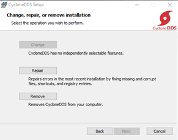
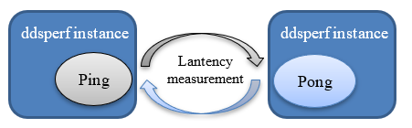
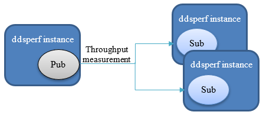
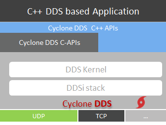

Getting Started¶
{kind=link}
Installing Eclipse Cyclone DDS¶
Eclipse Cyclone DDS is a very performant and robust OMG compliant Data Distribution Service (DDS) implementation. Cyclone DDS core is implemented in C and provides C-APIs to applications. Through its Cyclonedds-cxx package, the ISO/IEC C++ 2003 language binding is supported.
The first chapters detail the installation and build process of Cyclone Core, including the C-APIs. The remaining chapters details how to install the C++ support packages. Short tutorials in C and C++ are detailed to give the reader examples of how the DDS technology is used with Cyclone to share data.
System requirements¶
At the time of writing this document, Eclipse Cyclone DDS supports Linux, macOS, and Windows and is known to work on FreeRTOS, QNX and the solaris-like Openindiana OS.
To build the Cyclone DDS implementation, the following software should be installed on your machine:
A C compiler (most commonly GCC or clang on Linux, Visual Studio on Windows, XCode on macOS);
Git version control system;
CMake, version 3.10 or later;
Optionally OpenSSL, preferably version 1.1 or later to use TLS over TCP. If you need to reduce the footprint or if you have issues with the FindOpenSSL CMake script, you can explicitly disable this by setting ENABLE_SSL=NO
On Linux, install these dependencies with a package manager of your choice:
yum install git cmake gcc
apt-get install git cmake gcc
aptitude install git cmake gcc
# or others
On Windows, to install dependencies using chocolatey, use choco install git cmake.
On macOS, installing XCode from the App Store should be enough.
Native Installation for Linux and macOS¶
To obtain the Eclipse Cyclone DDS:
git clone https://github.com/eclipse-cyclonedds/cyclonedds.git
cd cyclonedds
mkdir build
Then, depending on whether you like to develop applications using Cyclone DDS or contribute to it, you may follow different procedures.
For Application Developers¶
You can build and install the required libraries needed to develop your own applications using Cyclone DDS in a few simple steps.
cd build
cmake -DCMAKE_INSTALL_PREFIX=<install-location> ..
cmake --build .
To install it after a successful build:
Depending on the installation location, you may need administrator privileges.
cmake --build . --target install
This install step copies everything to:
<install-location>/lib<install-location>/bin<install-location>/include/ddsc<install-location>/share/CycloneDDS
At this point, you are ready to use Eclipse Cyclone DDS in your own projects.
Note: The default build type is a release build with debug
information included (RelWithDebInfo). This is a convenient type of
build to use from applications because of a good mix between performance
and still being able to debug things. If you’d rather have a Debug or
pure Release build, set CMAKE_BUILD_TYPE accordingly.
If you want to contribute to Cyclone DDS, please refer to Appendix I Contributing to Eclipse Cyclone DDS.
Installation with product installer for Linux and macOS¶
TBD.
Native Installation for Windows¶
To obtain the Eclipse Cyclone DDS:
git clone https://github.com/eclipse-cyclonedds/cyclonedds.git
cd cyclonedds
mkdir build
Then, depending on whether you like to develop applications using Cyclone DDS or contribute to it, you may follow different procedures.
For Application Developers¶
You can build and install the required libraries needed to develop your own applications using Cyclone DDS in a few simple steps.
cd build
cmake -G "<generator-name>" -DCMAKE_INSTALL_PREFIX=<install-location> ..
cmake --build .
Note: Replace <install-location> with the directory where you
would like to install Cyclone DDS. Replace <generator-name> with one
of the methods CMake
generators
offer for generating build files.
For example, “Visual Studio 15 2017 Win64” targets a 64-bit build using
Visual Studio 2017, and the <install-location> can be in the
build\install directory. With both the <generator-name> and
<install-location> specified as the example, the command looks like
this:
cmake -G "Visual Studio 15 2017 Win64" -DCMAKE_INSTALL_PREFIX=install ..
To install it after a successful build:
Depending on the installation location you may need administrator privileges.
cmake --build . --target install
This step will copies everything to:
<install-location>/lib<install-location>/bin<install-location>/include/ddsc<install-location>/share/CycloneDDS
At this point, you are ready to use Eclipse Cyclone DDS in your projects.
Note: The default build type is a release build with debug
information included (RelWithDebInfo). This is a convenient type of
build to use from applications because of a good mix between performance
and still being able to debug things. If you’d rather have a Debug or
pure Release build, set CMAKE_BUILD_TYPE accordingly.
If you want to contribute to Cyclone DDS, please refer to Appendix I Contributing to Eclipse Cyclone DDS for Windows.
Installation with product installer for Windows¶
The Cyclone DDS also provides a product installer, this may be easier than installing it from GitHub.
To install the Cyclone DDS from the installer:
Start the installer, and click ‘Next’.
Accept the terms, and click’Next’.
Choose whether you want to add Cyclone DDS to the system PATH. We recommend to add it to the system PATH so that your application can use the related libraries directly. Select whether to add it for the current user or all users and click ‘Next’.
Set up the directory to install Cyclone DDS. We recommend that you DO NOT install it in the
Program Filesdirectory, as it needs administrators’ permission to write to the folder. Click ‘Next’.
You are now ready to install the Cyclone DDS, click ‘Install’.

Click ‘Finish’.

The installation of Cyclone DDS core, C-APIs and pre-compiler are complete. The next section describes how to test it.
Test your Installation¶
To test if your installation and configuration are working correctly,
you can use the Cyclone DDS ddsperf tool (ddsperf sanity) or you
can use the Hello World example. To use the ddsperf tool, refer to
testing your network
configuration. The test
using the Hello World example is explained in this section.
Environnement variable updates¶
On Windows, to run Eclipse Cyclone DDS executables, the required libraries
(like ddsc.dll) need to be available to the executables. Normally,
these libraries are installed in system default locations and it works
out-of-the-box. However, if they are not installed in those locations,
the library search path must be changed. This can be achieved by
executing the command:
set PATH=<install-location>\bin;%PATH%
Note: An alternative to make the required libraries available to the executables, is to simply copy the required libraries to the executables’ directory.
Running the pre-built example¶
Eclipse Cyclone DDS includes a simple Hello World! application that can be executed to test your installation. The Hello World! application consists of two executables:
HelloworldPublisherHelloworldSubscriber
The Hello World! application is located in
<cyclonedds-directory>\build\bin\Debug in Windows, and
<cyclonedds-directory>/build/bin in Linux.
To run the example application, open two console windows and navigate to
the appropriate directory in both console windows. Run
HelloworldSubscriber in one of the console windows using:
Windows
HelloworldSubscriber.exeLinux
./HelloworldSubscriber
Run HelloworldPublisher in the other console window using:
Windows
HelloworldPublisher.exeLinux
./HelloworldPublisher
HelloworldPublisher appears as follows:

HelloworldSubscriber appears as follows:

Note: Cyclone’s default behavior is to automatically detect the first network interface card available on your machine and uses it to exchange the hello world message. Ensure that your publisher and subscriber applications are on the same network, selecting the right interface card. This is one of the most common issues on machine configurations with multiple network interface cards.
This default behavior can be overridden by updating the property
//CycloneDDS/Domain/General/
NetworkInterfaceAddress in a deployment file (e.g.
cyclonedds.xml) that you created to point to it through an OS
environment variable named CYCLONEDDS_URI. More information on this
topic can be found in the github
repository
and the configuration section on
https://github.com/eclipse-cyclonedds/cyclonedds.
Want to know more about DDS?¶
The primary source of information is the OMG website at http://www.omg.org, specifically the DDS GettingStartedpage and the DDS specification.
In the future we will provide the following:
Tutorial document
Deployment Guide, for now, you can refer to https://github.com/eclipse-cyclonedds/cyclonedds/blob/master/docs/manual/options.md
You can find the API reference in the sidebar.
Uninstalling Cyclone DDS¶
Uninstallation for Native Installation¶
You can manually remove the install and build directory. In Linux and macOS in the install or build directory:
rm -rf *
Uninstallation for the product installer¶
Windows¶
On Windows, to uninstall the Cyclone DDS you can either do it from the Windows application control panel (Programs and Features in Control Panel) or by using the product installer; in this case, start-up the Cyclone DDS product installer, and select ‘Remove’.
Linux and macOS¶
TBD.
Building Cyclone DDS applications¶
Building Your First Example¶
To test the complete workflow of building a DDS based application, you can use a simple Hello World!. Although this application does not reveal all the power of building a data-centric application, it has the merit to introduce you to the basic steps to build a DDS application.
This chapter focuses on building this example, without analyzing the source code, which is the subject of the next chapter.
The procedure used to build the Hello World! example can also be used for building your own applications.
On Linux, if you have not specified an installation directory, it is
advised to copy the Cyclone DDS examples to your preferred directory.
You can find them in your <install-location> directory.
Six files are available under the Hello World! root directory to support building the example. For this chapter, we mainly describe:
CMakeLists.txtHelloWorldData.idlpublisher.csubscriber.c
Building the HelloWorld! application with CMake¶
In the previous sections, building the Hello World! example is done by default during the Cyclone build process. However, the Hello World! example can also be built using the CMake tool, although you can obviously build with your native compilers and preferred toolchains.
CMake is an open-source, cross-platform family of tools designed to build, test, and package software. It is used to control the software compilation process using simple platform and compiler independent configuration files. It also generates native makefiles, projects, and workspaces of your development environment. CMake’s main strength is build portability. The same CMake input files build with GNU make, Visual studio 6,7,8 IDEs, Borland make, nmake, and XCode, etc…
Another advantage of CMake is building out-of-source. It simply works out-of-the-box. There are two important reasons to choose this means:
Easy cleanup (no cluttering the source tree). Simply remove the build directory to start from scratch.
Multiple build targets. It’s possible to have up-to-date Debug and Release targets, without having to recompile the entire tree. For systems that do cross-platform compilation, it is easy to have up-to-date builds for the host and target platform.
In order to use CMake you need to provide a CMakeLists.txt. A sample
CMakeList file can be found within
<install-location>/share/CycloneDDS/examples/helloworld/
The content of the CMakeLists.txt is:
cmake_minimum_required(VERSION 3.5)
if (NOT TARGET CycloneDDS::ddsc)
# Find the Cyclone DDS package. If it is not in a default location, try
# finding it relative to the example where it most likely resides.
find_package(CycloneDDS REQUIRED PATHS
"${CMAKE_SOURCE_DIR}/../../")
endif()
# This is a convenience function, provided by the CycloneDDS package,
# that will supply a library target related the the given idl file.
# In short, it takes the idl file, generates the source files with
# the proper data types and compiles them into a library.
idlc_generate(HelloWorldData_lib "HelloWorldData.idl")
# Both executables have only one related source file.
add_executable(HelloworldPublisher publisher.c)
add_executable(HelloworldSubscriber subscriber.c)
# Both executables need to be linked to the idl data type library and
# the ddsc API library.
target_link_libraries(HelloworldPublisher HelloWorldData_lib CycloneDDS::ddsc)
target_link_libraries(HelloworldSubscriber HelloWorldData_lib CycloneDDS::ddsc)
To build a Cyclone based application you need to link your business code with:
The
ddsclibrary that contains the DDS API the application needs.The helper functions and structures that represent your datatypes. These helpers are generated by the Cyclone pre-compiler IDL and can be accessed through the CMake (
idlc_generate) call that takes the idl file (e.gHelloWorld.idl) as input and packages the datatyped helpers in a library (e.g.HelloWorldData_lib).
The idlc_generate call makes use of how the DDS IDLC-compiler
generates the helpers’ functions and structures.
This process is depicted as follows:
The cyclone-based application executable (e.g. HelloworldPublisher)
is built with the CMake target_link_libraries() call. This call
combines the ddsc lib, the datatype helper lib, and the application
code lib.
Note: CMake attempts to find the CycloneDDS CMake package in the
default location, two levels above the current source directory. Every
path and dependencies is automatically set. CMake uses the default
locations to locate the code CycloneDDS package.
Building the Hello World! Example¶
Now that CMakeLists.txt file is completed the build process can start
On Linux¶
It’s good practice to build examples or applications out-of-source by
creating a build directory in the
cyclonedds/build/install/share/CycloneDDS/examples/helloworld
directory.
Configure the build environment:
mkdir build
cd build
cmake ../
CMake uses the CMakeLists.txt in the helloworld directory to create makefiles that fit the native platform.
The real build process of the applications (HelloworldPublisher and
HelloworldSubscriber in this case) can start:
cmake --build .
The resulting Publisher and Subscriber applications can be found in
examples/helloworld/build.
The Hello World! example can now be executed, as described in Test your installation in the previous chapter
on Windows¶
CMake usually knows which generator to use, but with Windows you must supply a specific generator.
For example, only 64-bit libraries are shipped for Windows, by default CMake generates a 32-bit project, resulting in linker errors. When generating a Visual Studio project, if you want to generate a b4-bit build, append Win64 to the generator description.
The following example shows how to generate a Visual Studio 2015 project with a 64-bit build:
cmake -G "Visual Studio 14 2015 Win64" ..
Note: CMake generators can also create IDE environments. For instance, the “Visual Studio 14 2015 Win64” generates a Visual Studio solution file. Other IDE’s are also possible, such as Eclipse IDE.
CMake uses the CMakeLists.txt in the helloworld directory to create
makefiles that fit the native platform.
The real build process of the applications can start:
cmake --build .
To generate a Release build:
cmake --build . --config "Release"
The resulting Publisher and Subscriber applications can be found in examples\helloworld\build\Release.
The Hello World! example can now be executed, as described in Test your installation, using the binaries built.
Hello World!, Code anatomy¶
The previous chapter described the installation process that built implicitly or explicitly the C Hello World! Example. This chapter introduces the key concept of DDS and details the structural code of a simple system made by an application that publishes keyed messages and another one that subscribes and reads such data. Each message represents a data object that is uniquely identified with a unique key and a payload.
Data-Centric Architecture¶
In a service-centric architecture, to interact, applications need to know each other’s interfaces to share data, share events, share commands, or replies. These interfaces are modeled as sets of operations and functions that are managed in centralized repositories. This kind of architecture creates unnecessary dependencies that end-up creating a tightly coupled system. The centralized interface repositories are usually seen as a single point of failure.
In a data-centric architecture, your design focuses on the data each application produces and decides to share rather than on the Interfaces’ operations and the internal processing that produced them.
A data-centric architecture creates a decoupled system that focuses on the data and applications states’ that need to be shared rather than the applications’ details. In a data-centric system, data and their associated quality of services are the only contract that bounds the applications together. With DDS, the system decoupling is bi-dimensional, in Space and in Time.
Space-decoupling derives from the fact that applications do not need to, either know the identity of the data produced (or consumers) nor their logical or their physical location in the network. Under the hood, DDS runs a zero-configuration, interoperable discovery protocol that searches matching data readers and data writes that are interested by the same data topic.
Time-decoupling derives from the fact that, fundamentally, the nature of the communication is asynchronous. Data producers and data consumers, known respectively, as Data Writers, and data readers are not forced to be active and connected at the same time to share data. In this scenario, the DDS middleware can handle and manage data on behalf of the late joining data readers applications and delivered to it when they join the system.
Time and space decoupling gives applications the freedom to be plugged or unplugged in the system at any time, from anywhere, in any order. This keeps the complexity and administration of a data-centric architecture relatively low when adding more and more data readers and data writers applications.
Keys steps to build the Hello World! application¶
The Hello World! example has a very simple ‘data layer’ with a data
model made of one data type Msg that represents keyed messages (c,f
next subsection).
To exchange data with Cyclone DDS, applications’ business logic needs to:
Declare its participation and involvement in a DDS domain. A DDS domain is an administrative boundary that defines, scopes, and gathers all the DDS applications, data, and infrastructure that needs to interconnect together by sharing the same data space. Each DDS domain has a unique identifier. Applications declare their participation within a DDS domain by creating a Domain Participant entity.
Create a Data topic that has the data type described in a data model. The data types define the structure of the Topic. The Topic is therefore an association between the topic’s name and a datatype. QoSs can be optionally added to this association. The concept Topic therefore discriminates and categorizes the data in logical classes and streams.
Create the Data Readers and Writers entities that are specific to the topic. Applications may want to change the default QoSs. In the Hello world! example, the
ReliabilityQoSis changed from its default value (Best-effort) toReliable.Once the previous DDS computational entities are in place, the application logic can start writing or reading the data.
At the application level, readers and writers do not need to be aware of
each other. The reading application, hereby called Subscriber polls the
data reader periodically, until a publishing application, hereby called
Publisher writes the required data into the shared topic, namely
HelloWorldData_Msg.
The data type is described using the OMG IDL
Language located in
HelloWorldData.idl file. Such IDL file is seen as the data model of
our example.
This data model is preprocessed and compiled by Cyclone-DDS IDL-Compiler
to generate a C representation of the data as described in Chapter 2.
These generated source and header files are used by the
HelloworldSubscriber.c and HelloworldPublishe.c programs to
share the Hello World! Message instance and sample.
Hello World! IDL¶
The HelloWorld data type is described in a language independent way and stored in the HelloWorldData.idl file:
module HelloWorldData
{
struct Msg
{
@key long userID;
string message;
};
};
A subset of the OMG Interface Definition Language (IDL) is used as DDS
data definition language. In our simple example, the HelloWorld data
model is made of one module HelloWorldData. A module can be seen as
a namespace where data with interrelated semantic is represented
together in the same logical set.
The structMsg is the actual data type that shapes the data used to
build topics. As already mentioned, a topic is an association between a
data type and a string name. The topic name is not defined in the IDL
file, but it is defined by the application business logic, at runtime.
In our simplistic case, the data type Msg contains two fields:
userID and message payload. The userID is used as a unique
identification of each message instance. This is done using the
@key annotation.
The Cyclone DDS IDL compiler translates the IDL datatype in a C struct
with a name made of the<ModuleName>_<DataTypeName> .
typedef struct HelloWorldData_Msg
{
int32_t userID;
char * message;
} HelloWorldData_Msg;
Note: When translated into a different programming language, the data has a different representation that is specific to the target language. For instance, as shown in chapter 7, in C++ the Helloworld data type is represented by a C++ class. This is the advantage of using a neutral language like IDL to describe the data model.It can be translated into different languages that can be shared between different applications written in different programming languages.
Generated files with the IDL compiler¶
In Cyclone DDS the IDL compiler is a C program that processes .idl files.
idlc HelloWorldData.idl
This results in new HelloWorldData.c and HelloWorldData.h files
that need to be compiled and their associated object file must be linked
with the Hello World! publisher and subscriber application business
logic. When using the Cyclone provided CMake project, this step is done
automatically.
As described earlier, the IDL compiler generates one source and one
header files. The header file (HelloWorldData.h) contains the data
type of the messages that are shared. While the source file has no
direct use from the application developer’s perspective.
HelloWorldData.h* needs to be included by the application code as
it contains the actual message type and contains helper macros to
allocate and free memory space for the HelloWorldData_Msg type.
typedef struct HelloWorldData_Msg
{
int32_t userID;
char * message;
} HelloWorldData_Msg;
HelloWorldData_Msg_alloc()
HelloWorldData_Msg_free(d,o)
The header file also contains an extra variable that describes the data type to the DDS middleware. This variable needs to be used by the application when creating the topic.
HelloWorldData_Msg_desc
The Hello World! Business Logic¶
As well as the HelloWorldData.h/c generated files, the Hello
World! example also contains two application-level source files
(subscriber.c and publisher.c), containing the business logic.
Hello World! Subscriber Source Code¶
The Subscriber.c mainly contains the statements to wait for a Hello
World! message and reads it when it receives it.
Note: The Cyclone DDS read semantics keeps the data sample
in the data reader cache. It is important to remember to use take where
appropriate to prevent resource-exhaustion.
The subscriber application implements the steps defined in the Key Steps.
1#include "ddsc/dds.h"
2#include "HelloWorldData.h"
3#include <stdio.h>
4#include <string.h>
5#include <stdlib.h>
6
7/* An array of one message (aka sample in dds terms) will be used. */
8#define MAX_SAMPLES 1
9int main (int argc, char ** argv) {
10 dds_entity_t participant;
11 dds_entity_t topic;
12 dds_entity_t reader;
13 HelloWorldData_Msg *msg;
14 void *samples[MAX_SAMPLES];
15 dds_sample_info_t infos[MAX_SAMPLES];
16 dds_return_t ret;
17 dds_qos_t *qos;
18 (void)argc;
19 (void)argv;
20
21 /* Create a Participant. */
22 participant = dds_create_participant (DDS_DOMAIN_DEFAULT, NULL, NULL);
23 DDS_ERR_CHECK (participant, DDS_CHECK_REPORT | DDS_CHECK_EXIT);
24
25 /* Create a Topic. */
26 topic = dds_create_topic (participant, &HelloWorldData_Msg_desc,
27 "HelloWorldData_Msg", NULL, NULL);
28 DDS_ERR_CHECK (topic, DDS_CHECK_REPORT | DDS_CHECK_EXIT);
29
30 /* Create a reliable Reader. */
31 qos = dds_create_qos ();
32 dds_qset_reliability (qos, DDS_RELIABILITY_RELIABLE, DDS_SECS (10));
33 reader = dds_create_reader (participant, topic, qos, NULL);
34 DDS_ERR_CHECK (reader, DDS_CHECK_REPORT | DDS_CHECK_EXIT);
35 dds_delete_qos(qos);
36
37 printf ("\n=== [Subscriber] Waiting for a sample ...\n");
38
39 /* Initialize sample buffer, by pointing the void pointer within
40 * the buffer array to a valid sample memory location. */
41 samples[0] = HelloWorldData_Msg alloc ();
42
43 /* Poll until data has been read. */
44 while (true)
45 {
46 /* Do the actual read.
47 * The return value contains the number of read samples. */
48 ret = dds_read (reader, samples, infos, MAX_SAMPLES, MAX_SAMPLES);
49 DDS_ERR_CHECK (ret, DDS_CHECK_REPORT | DDS_CHECK_EXIT);
50
51 /* Check if we read some data and it is valid. */
52 if ((ret > 0) && (infos[0].valid_data))
53 {
54 /* Print Message. */
55 msg = (HelloWorldData_Msg*) samples[0];
56 printf ("=== [Subscriber] Received : ");
57 printf ("Message (%d, %s)\n", msg->userID, msg->message);
58 break;
59 }
60 else
61 {
62 /* Polling sleep. */
63 dds_sleepfor (DDS_MSECS (20));
64 }
65 }
66
67 /* Free the data location. */
68 HelloWorldData_Msg_free (samples[0], DDS_FREE_ALL);
69
70 /* Deleting the participant will delete all its children recursively as well. */
71 ret = dds_delete (participant);
72 DDS_ERR_CHECK (ret, DDS_CHECK_REPORT | DDS_CHECK_EXIT);
73
74 return EXIT_SUCCESS;
75}
Within the subscriber code, we mainly use the DDS API and the
HelloWorldData_Msg type. The following header files must be included:
The
dds.hfile to give access to the DDS APIsThe
HelloWorldData.his specific to the data type defined in the IDL
#include "ddsc/dds.h"
#include "HelloWorldData.h"
With Cyclone DDS, at least three DDS entities are needed to build a minimalistic application, the domain participant, the topic, and the reader. A DDS Subscriber entity is implicitly created by Cyclone DDS. If required, this behavior can be overridden.
dds_entity_t participant;
dds_entity_t topic;
dds_entity_t reader;
To handle the data, some buffers are declared and created:
HelloWorldData_Msg *msg;
void *samples[MAX_SAMPLES];
dds_sample_info_t info[MAX_SAMPLES];
As the read() operation may return more than one data sample (in the
event that several publishing applications are started simultaneously to
write different message instances), an array of samples is therefore
needed.
In Cyclone DDS data and metadata are propagated together. The
dds_sample_info array needs to be declared to handle the metadata.
The DDS participant is always attached to a specific DDS domain. In the
Hello World! example, it is part of the Default_Domain, the one
specified in the xml deployment file (see test your installation for more details).
participant = dds_create_participant (DDS_DOMAIN_DEFAULT, NULL, NULL);
The next step is to create the topic with a given name. Topics with the same data type description and with different names are considered different topics. This means that readers or writers created for a given topic do not interfere with readers or writers created with another topic even if they have the same data type. Topics with the same name but incompatible datatype is considered an error and should be avoided.
topic = dds_create_topic (participant, &HelloWorldData_Msg_desc, "HelloWorldData_Msg", NULL, NULL);
Once the topic is created, we can create a data reader and attach to it.
dds_qos_t *qos = dds_create_qos ();
dds_qset_reliability (qos, DDS_RELIABILITY_RELIABLE, DDS_SECS (10));
reader = dds_create_reader (participant, topic, qos, NULL);
dds_delete_qos(qos);
The read operation expects an array of pointers to a valid memory location. This means the samples array needs initialization by pointing the void pointer within the buffer array to a valid sample memory location.
In our example, we have an array of one element
(#define MAX_SAMPLES 1.) we only need to allocate memory for one
HelloWorldData_Msg.
samples[0] = HelloWorldData_Msg_alloc ();
At this stage, we can attempt to read data by going into a polling loop that regularly scrutinizes and examines the arrival of a message.
ret = dds_read (reader, samples, info, MAX_SAMPLES, MAX_SAMPLES);
The dds_read operation returns the number of samples equal to the
parameter MAX_SAMPLE. If that number exceeds 0 that means data
arrived in the reader’s cache.
The Sample_info (info) structure tells us whether the data we are
reading is Valid or Invalid. Valid data means that it contains the
payload provided by the publishing application. Invalid data means, that
we are rather reading the DDS state of data Instance. The state of a
data instance can be for instance DISPOSED by the writer or it is
NOT_ALIVE anymore, which could happen if the publisher application
terminates while the subscriber is still active. In this case, the
sample is not considered as Valid, and its sample info[].Valid_data
field is be False.
if ((ret > 0) && (info[0].valid_data))
If data is read, then we can cast the void pointer to the actual message data type and display the contents.
msg = (HelloWorldData_Msg*) samples[0];
printf ("=== [Subscriber] Received : ");
printf ("Message (%d, %s)\n", msg->userID, msg->message);
break;
When data is received and the polling loop is stopped, we release the allocated memory and delete the domain participant.
HelloWorldData_Msg_free (samples[0], DDS_FREE_ALL);
dds_delete (participant);
All the entities that are created under the participant, such as the data reader and topic, are recursively deleted.
Hello World! Publisher Source Code¶
The Publisher.c contains the source that writes a Hello World!
Message.
From the DDS perspective, the publisher application code is almost symmetric to the subscriber one, except that you need to create a data writer instead of a data reader. To ensure data is written only when Cyclone DDS discovers at least a matching reader, a synchronization statement is added to the main thread. Synchronizing the main thread until a reader is discovered ensures we can start the publisher or subscriber program in any order.
1#include "ddsc/dds.h"
2#include "HelloWorldData.h"
3#include <stdio.h>
4#include <stdlib.h>
5
6int main (int argc, char ** argv)
7{
8 dds_entity_t participant;
9 dds_entity_t topic;
10 dds_entity_t writer;
11 dds_return_t ret;
12 HelloWorldData_Msg msg;
13 (void)argc;
14 (void)argv;
15
16 /* Create a Participant. */
17 participant = dds_create_participant (DDS_DOMAIN_DEFAULT, NULL, NULL);
18 DDS_ERR_CHECK (participant, DDS_CHECK_REPORT | DDS_CHECK_EXIT);
19
20 /* Create a Topic. */
21 topic = dds_create_topic (participant, &HelloWorldData_Msg_desc, "HelloWorldData_Msg", NULL, NULL);
22 DDS_ERR_CHECK (topic, DDS_CHECK_REPORT | DDS_CHECK_EXIT);
23
24 /* Create a Writer. */
25 writer = dds_create_writer (participant, topic, NULL, NULL);
26
27 printf("=== [Publisher] Waiting for a reader to be discovered ...\n");
28
29 ret = dds_set_status_mask(writer, DDS_PUBLICATION_MATCHED_STATUS);
30 DDS_ERR_CHECK (ret, DDS_CHECK_REPORT | DDS_CHECK_EXIT);
31
32 while(true)
33 {
34 uint32_t status;
35 ret = dds_get_status_changes (writer, &status);
36 DDS_ERR_CHECK (ret, DDS_CHECK_REPORT | DDS_CHECK_EXIT);
37
38 if (status == DDS_PUBLICATION_MATCHED_STATUS) {
39 break;
40 }
41 /* Polling sleep. */
42 dds_sleepfor (DDS_MSECS (20));
43 }
44
45 /* Create a message to write. */
46 msg.userID = 1;
47 msg.message = "Hello World";
48
49 printf ("=== [Publisher] Writing : ");
50 printf ("Message (%d, %s)\n", msg.userID, msg.message);
51
52 ret = dds_write (writer, &msg);
53 DDS_ERR_CHECK (ret, DDS_CHECK_REPORT | DDS_CHECK_EXIT);
54
55 /* Deleting the participant will delete all its children recursively as well. */
56 ret = dds_delete (participant);
57 DDS_ERR_CHECK (ret, DDS_CHECK_REPORT | DDS_CHECK_EXIT);
58
59 return EXIT_SUCCESS;
60}
We are using the DDS API and the HelloWorldData_Msg type to send
data, therefore, we need to include the appropriate header files as we
did in the subscriber code.
#include "ddsc/dds.h"
#include "HelloWorldData.h"
Like with the reader in subscriber.c, we need a participant and a
topic to create a writer. We also need to use the same topic name as the
one specified in subscriber.c.
dds_entity_t participant;
dds_entity_t topic;
dds_entity_t writer;
participant = dds_create_participant (DDS_DOMAIN_DEFAULT, NULL, NULL);
topic = dds_create_topic (participant, &HelloWorldData_Msg_desc,
"HelloWorldData_Msg", NULL, NULL);
writer = dds_create_writer (participant, topic, NULL, NULL);
When Cyclone DDS discovers readers and writers sharing the same data type and topic name, it connects them without the application involvement. In order to write data only when a data readers appears, a rendez-vous pattern is required. Such pattern can be implemented by either:
Waiting for the publication/subscription matched events, where the Publisher waits and blocks the writing-thread until the appropriate publication matched event is raised, or
Regularly, polls the publication matching status. This is the preferred option we implement in this example. The following line of code instructs Cyclone DDS to listen on the DDS_PUBLICATION_MATCHED_STATUS:
dds_set_status_mask(writer, DDS_PUBLICATION_MATCHED_STATUS);
At regular intervals we get the status change and a matching
publication. In between, the writing thread sleeps for a time period
equal DDS\_MSECS (in milliseconds).
while(true)
{
uint32_t status;
ret = dds_get_status_changes (writer, &status);
DDS_ERR_CHECK(ret, DDS_CHECK_REPORT | DDS_CHECK_EXIT);
if (status == DDS_PUBLICATION_MATCHED_STATUS) {
break;
}
/* Polling sleep. */
dds_sleepfor (DDS_MSECS (20));
}
After this loop, we are sure that a matching reader has been discovered. Now, we commence the writing of the data instance. First, the data must be created and initialized
HelloWorldData_Msg msg;
msg.userID = 1;
msg.message = "Hello World";
Then we can send the data instance of the keyed message.
ret = dds_write (writer, &msg);
When terminating the program, we free the DDS allocated resources by deleting the root entity of all the others: the domain participant.
ret = dds_delete (participant);
All the underlying entities such as topic, writer … etc are deleted.
Benchmarking Tools for Cyclone¶
Introduction¶
Cyclone DDS provides a tool that measures primarily data throughput and latency of the cyclone-based applications within the network or within the same board, namely ddsperf. This tool also help to do sanity checks to ensure your configuration is correctly set up and running. This chapter describes how to use the ddsperf tool and how to read and interpret its outputs and results. Using the Cyclone DDS Python package you can also run ddsperf as a graphical application, by running cyclonedds performance.
As well as ddsperf, you can also find dedicated examples in the product distribution that measures the DDS system throughput and the latency with their associated codebase. You can start from the provided code and customize it to fit your scenario and exact data types. Both ddsperftool and the provided examples perform the benchmarking using sequences of octets with different parameterized sizes.
Testing your network configuration¶
Once your Cyclone DDS installation is successfully completed, you may want to test if your network environment is correctly set up. This can be done either by running the HelloWorld example or by using the ddsperf tool. The Helloworld example sends a message in one shot, whereas the ddsperf tool can send a continuous stream of data at a low frequency rate for sanity checks and can therefore bypass sporadic network issues.
If you have installed Cyclone DDS using the product installer, the
ddsperf tool is pre-installed within <cyclonedds_dir>/bin. If you
have installed Cyclone DDS through the native installation process,
(from GitHub), you can locate the tool within
<cyclonedds_dir>/build/bin.
Complete the sanity checks of your DDS based system using the ddsperf tool as follows:
ddsperf sanity
With the sanity option, only one data sample is sent each second (1Hz).
In another terminal, start the ddsperf with the Pong mode to echo the data to the first instance of the ddsperf started with the Sanity option.
ddsperf pong
If the data is not exchanged on the network between the two ddsperf instances, it is likely that Cyclone DDS has not selected the appropriate network card on both machines or a firewall in-between is preventing the communication.
Cyclone DDS automatically selects the most available network interface. This behavior can be overridden by changing the configuration file. (see section test your installation for more details) .
When running the previous scenario on a local machine, this test ensures the loop-back option is enabled.
Measuring Latency¶
To measure latency between two different applications, you need to run two instances of the ddsperf tool and instruct one of them to endorse the role of a sender that sends a given amount of data (a sequence of octets) at a given rate and the other instance takes the role of receiver that sends back the same amount of data to the sender in a Ping-Pong scenario. The sending action is triggered by the Ping option. The receiving behavior is triggered by the Pong action. The sender measures the roundtrip time and computes the latency as half of the roundtrip time.
The Ping-Pong scenario avoids clock desynchronization issues that might occur between two machines that do not share accurately the same perception of the time in the network.
To differential the two operational modes, the ddsperf tool can operate either in a Ping mode or in a Pong mode.
To run this scenario, open 2 terminals (e.g on Linux like OSs) and run the following commands in either of the terminals. The graphical python-based alternative is also noted.
ddsperf ping
cyclonedds performance ping
Input this command in another terminal:
ddsperf pong
cyclonedds performance pong
This basic scenario performs a simple latency test with all the default values. You may customize your test scenario by changing the following options.
In Ping mode you can specify:
The Rate and frequency at which data is written. This is specified through the [R[Hz]] option. The default rate is “as fast as possible”. In ping mode, it always sends a new ping as soon as it gets a pong
The Size of the data that is exchanged. This is specified through the [Size S] option. Using the default built-in topic, 12 bytes (an integer key, an integer sequence number, and an empty sequence of bytes). are sent every time. The size is “as small as possible” by default, depending on the size of the topic it defaults to
The Listening mode, which can either be
waitsetbased orListenerCallbacks modes. In the waitset mode the ddsperf application creates a dedicated thread to wait for the data to return back from the receiving instance of ddsperf tool (i.e the instance started with the Pong mode). In the Listener Callback mode, the thread is created by the Cyclone DDS middleware. The Listener mode is the default.
In Pong mode you can only specify one option:
The Listening mode (with two possible values,
waitsetorListener)
For instance, if you want to measure local latency between to processes exchanging 2KB at the frequency of 50Hz, you can run the following commands in 2 different terminals:
ddsperf ping 50Hz 2048 waitset
cyclonedds performance ping --rate 50Hz --size 2048 --triggering-mode waitset
ddsperf pong waitset
cyclonedds performance pong --triggering-mode waitset
The output of the ddsperf tool is as shown below:
The output for the Ping application indicates mainly:
The size of the data involved in the test (e.g. 12 bytes)
The minimum latency (e.g. 78.89 us)
The maximum latency (e.g. 544,85 us)
The mean latency (e.g. 118.434 us)
As well as the latency at 50%, 90% or 99% of the time.

The output for the Pong application:
RSS is the Resident Set Size; it indicates the amount of memory used by the process (e.g. 3.5MB used by the process id 2680);
VCSW is the number of voluntary switches, it indicates the times when the process waits for input or an event (e.g. 2097 times);
IVCSW is the number of involuntary switches, it indicates the times when the process is pre-empted or blocked by a mutex (e.g. 6 times);
The percentage of time spent executing user code and the percentage of time spent executing kernel code in a specific thread (e.g. spent almost 0% of the time executing the user code and 5% executing kernel code in thread “ping”).

Measuring Throughput¶
To measure throughput between two different applications, you need to run at least two instances of the ddsperftool and instruct one of them to endorse the role of a Publisher that sends a given amount of data (a sequence of octets) at a given rate. The other instances take the role of Subscriber applications. Please note that when your scenario involves only one subscriber, the UDP unicast mode is used. If several subscriber instances are running, the multicast is automatically used.
Two additional modes are therefore supported:
The Pub mode and the Sub mode.
In the Sub mode the subscriber operates either:
Using the Listener notification mechanism,
The WaitSet notification mechanism, or
The Pooling mode. The pooling mode allows the subscriber to cyclically fetch the data from its local cache instead of being notified each time a new set of data is added to the subscriber’s cache as is the case with the other modes.
You can publish data in two ways by publishing each data sample individually or by sending them in a Burst mode.
The Rate and frequency at which data is written. This is specified through the [R[Hz]] option. The default rate is “as fast as possible”. Which means, in pub mode, instead of trying to reach a certain rate, it just pushes data as hard as it can.
The Size of the data that is exchanged. This is specified through the [Size S] option. The size is “as small as possible” by default, depending on the size of the topic it defaults to.
The Burst Size , defines the number of data samples that are issued together in as a batch. This parameter is defined by the [Burst N] option. The default size for burst is 1. It doesn’t make much difference when going “as fast as possible”, and it only applies to the pub mode.
The triggering mode by default is listener for the ping , pong and sub mode.
To run a simple throughput test, you can simply run a pub mode and a sub mode in 2 different terminals without specifying any other options or you can customize it as shown below:
Open two terminals, navigate to the directory where ddsperf is located and write the following command:
ddsperf pub size 1k
cyclonedds performance publish --size 1k
And in the other terminal, type in:
ddsperf -Qrss:1 sub
cyclonedds performance -Qrss:1 subscribe
This measures the throughput of data samples with 1Kbytes written as fast as possible.
The -Qrss:1 option in sub mode sets the maximum allowed increase
in RSS as 1MB. When running the test, if the memory occupieds by the
process increases by less than 1MB, the test can successfully run.
Otherwise, an error message is printed out at the end of the test.
As the pub in this example only has a size of 1k, the sub does not
print out an RSS error message at the end of the test.
The output of the ddsperf tool when measuring throughput is as shown below:
The output for the Pub application indicates mainly:
RSS is the Resident Set Size; it indicates the amount of memory is used by the process (e.g. 6.3MB used by the process id “4026”);
VCSW is the number of voluntary switches, it indicates the times when the process waits for input or an event (e.g. 1054 times);
IVCSW is the number of involuntary switches, it indicates the times when the process is pre-empted or blocked by a mutex (e.g. 24 times);
The percentage of time spent executing user code and the percentage of time spent executing kernel code in a specific thread (e.g. spent 34% of the time executing the user code and 11% executing kernel code in thread “pub”).
The output for the Sub application indicates mainly:
The size of the data involved in this test (e.g. 1024 bytes, which is the “size 1k” defined in the pub command)
The total packets received (e.g. 614598);
The total packets lost t (e.g. 0);
The packets received in a 1 second reporting period (e.g. 212648);
The packets lost in a 1 second report period (e.g. 0);
The number of samples processed by the Sub application in 1s (e.g. 21260 KS/s, with the unit KS/s is 1000 samples per second).

Measuring Throughput and Latency in a mixed scenario¶
In some scenarios, it might be useful to measure the throughput and latency at the same time.
The ddsperf tool allows you to mix these two scenarios. To address such cases the Ping mode can be combined with the Pub mode.
The [Ping x%] switch combined with the Pub mode allows you to send a fraction of samples x% as if they were used in the Ping mode.
The different modes of the ddsperf tool are summarized in the figure below.
You can get more information for the ddsperf tool by using the [help] option:
ddsperf help
cyclonedds performance --help
Additional options¶
As well as selecting the mode, you can also select the options
to specify how to send and receive the data (such as modifying the
reliable QoS from Reliable to Best-Effort with the -u option), or
how to evaluate or view the data in the ddsperftool.
The options you can select are listed in the ddsperf help
menu, as shown below.
Installing Eclipse Cyclone DDS CXX¶
Cyclone DDS CXX is an implementation of the DDS ISO/IEC C++ PSM API, or simply put, a C++ binding for Eclipse Cyclone DDS. It is made of an IDL compiler that uses an IDL data model to generate their C++ representation and artifacts, a software layer that maps some DDS APIs on the Cyclone DDS C APIs and direct access to the cyclone kernel APIs when managing data to lower overhead.
System requirements¶
At the time of writing this document, Eclipse Cyclone DDS CXX supports Linux, macOS, and Windows. Cyclone DDS CXX is known to work on FreeRTOS and the solaris-like Openindiana OS.
To build the Cyclone DDS C++ binding, the following software should be installed on your machine.
C and C++ compilers (most commonly GCC on Linux, Visual Studio on Windows, Xcode on macOS);
Eclipse Cyclone DDS
The installation of Eclipse Cyclone DDS with the C language support is described in Chapter 1. This chapter describes the CXX IDL compiler.
Native Installation for Linux and macOS¶
Install Eclipse Cyclone DDS CXX¶
To obtain the C++ binding for Cyclone DDS:
git clone https://github.com/eclipse-cyclonedds/cyclonedds-cxx.git
Building¶
To build Cyclone DDS CXX, browse to the folder directory and create a “build” folder to retain the build files.
cd cyclonedds-cxx
mkdir build
Depending on whether you want to develop applications using Cyclone DDS CXX or contribute to it, you may follow different procedures.
For Application Developers¶
To build and install the required libraries needed to develop your applications using the C++ binding for Cyclone DDS:
cd build
cmake -DCMAKE_INSTALL_PREFIX=<cyclonedds-cxx-install-location> -DCMAKE_PREFIX_PATH="<cyclonedds-install-location>" -DBUILD_EXAMPLES=ON ..
cmake --build .
The <cyclonedds-cxx-install-location> is where the C++ binding for
Cyclone DDS is installed to.
To install the package after a successful build:
Depending on the installation location you may need administrator privileges.
cmake --build . --target install
This copies everything to:
<cyclonedds-cxx-install-location>/lib<cyclonedds-cxx-install-location>/bin<cyclonedds-cxx-install-location>/include/ddsc<cyclonedds-cxx-install-location>/share/CycloneDDS CXX
At this point, you are ready to use Eclipse Cyclone DDS CXX in your projects.
Note: The default build type is a release build with debug
information included (RelWithDebInfo). This is a convenient type of
build to use for applications as it provides a good mix between
performance and the ability to debug things. If you’d rather have a
Debug or pure Release build, set CMAKE_BUILD_TYPE accordingly.
If you want to contribute to Cyclone DDS CXX, please refer to Appendix II Contributing to Eclipse Cyclone DDS CXX.
Installation with product installer for Linux and macOS¶
TBD.
Native Installation for Windows¶
Install Eclipse Cyclone DDS CXX¶
To obtain the C++ binding for Cyclone DDS:
git clone https://github.com/eclipse-cyclonedds/cyclonedds-cxx.git
Building¶
To build the Cyclone DDS CXX, browse to the folder directory and create a “build” folder to retain all the build files.
cd cyclonedds-cxx
mkdir build
Depending on whether you want to develop applications using Cyclone DDS CXX or contribute to it, you may follow different procedures.
For Application Developers¶
To build and install the required libraries needed to develop your applications using the C++ binding for Cyclone DDS:
cd build
cmake -G "<generator-name>" -DCMAKE_INSTALL_PREFIX=<cyclonedds-cxx-install-location> -DCMAKE_PREFIX_PATH="<cyclonedds-install-location>" -DBUILD_EXAMPLES=ON ..
cmake --build .
Note: Replace <generator-name> with one of the methods CMake
generators offer for generating build files. For example, for
“Visual Studio 16 2019” target a 64-bit build using Visual Studio
2019. And the command should be:
cmake -G "Visual Studio 16 2019" -DCMAKE_INSTALL_PREFIX=<cyclonedds-cxx-install-location> -DCMAKE_PREFIX_PATH="<cyclonedds-install-location>" -DBUILD_EXAMPLES=ON ..
To install after a successful build:
Depending on the installation location you may need administrator privileges.
cmake --build . --target install
This copies everything to:
<cyclonedds-cxx-install-location>/lib<cyclonedds-cxx-install-location>/bin<cyclonedds-cxx-install-location>/include/ddsc<cyclonedds-cxx-install-location>/share/CycloneDDS CXX
At this point, you are ready to use Eclipse Cyclone DDS CXX in your projects.
Note: The default build type is a release build with debug
information included (RelWithDebInfo). This is a convenient type of
build to use for applications as it provides a good mix between
performance and the ability to debug things. If you prefer have a Debug
or pure Release build, set CMAKE_BUILD_TYPE accordingly.
If you want to contribute to Cyclone DDS CXX, refer to Contributing to Eclipse Cyclone DDS CXX for Windows in Appendix II.
Installation with product installer for Windows¶
Cyclone DDS CXX also provides a product installer, this may be easier than installing it from GitHub.
To install the Cyclone DDS CXX from the installer, use the following steps.
Start up the installer and click ‘Next’.
Agree to the terms, and click ‘Next’.

Choose whether you would like to add Cyclone DDS CXX to the system PATH. We recommend to add it to the system PATH, so that your application can use the related libraies directly. Select whether you would like to add it for the current user or for all users and click ‘Next’.
Select the directory where you would like to install Cyclone DDS CXX. Avoid installing it within the
Program Filesdirectory, as it requires administrator privileges. Click ‘Next’.

You are now ready to install the Cyclone DDS CXX, click ‘Install’.

Click ‘Finish’.

The installation for Cyclone DDS CXX is complete, to build an application using Cyclone DDS CXX, refer to how to build your first Cyclone DDS CXX example.
Test your CXX Installation for Native Installation¶
Environnement variable updates¶
To run an Eclipse Cyclone DDSCXX application, the required libraries (such as ddsc.dll and ddscxx.dll) must be available in the executable path. These libraries should be installed in the system default location. However, if they are not installed there, the library search path must be updated accordingly. On Linux use the command:
Set PATH=<cyclonedds-installation-location>\bin;<cyclonedds-cxx-installation-location>\bin
Note: Alternatively, copy the required libraries to the executables’ directory.
Running the pre-built example¶
A simple Hello World application is included in the Eclipse Cyclone DDSCXX, it can be used to test the installation. The Hello World application is located in:
Windows:
<cyclonedds-cxx-directory>\build\bin\DebugLinux:
<cyclone-cxx-directory>/build/bin
To run the example application, open two console windows, and navigate
to the appropriate directory. Run the ddscxxHelloworldPublisher in
one of the console windows by using the following command:
Windows:
ddscxxHelloworldPublisher.exeLinux:
./ddscxxHelloworldPublisher
Run the ddscxxHelloworldSubscriber in the other console window
using:
Windows:
ddscxxHelloworldSubscriber.exeLinux:
./ddscxxHelloworldSubscriber.exe
The output for the ddscxxHelloworldPublisher is as follows:
The output for the ddscxxHelloworldSubscriber is as follows:

For more information on how to build this application and the code which has been used, refer to Hello World.
Uninstalling Cyclone DDS CXX¶
Uninstallation for Native Installation¶
At this stage, you can manually remove the install and build directory. Alternatively, in Linux and macOS, in the install or build directory, use the following command:
rm -rf *
Uninstallation for product installer¶
Windows¶
To uninstall the Cyclone DDS CXX either remove it from Programs and Features in the Control Panel or use the Cyclone DDS CXX installer. In the latest case start Cyclone DDS CXX package, and choose ‘Remove’.
Linux and macOS¶
TBD.
Building Eclipse Cyclone DDS CXX applications¶
Building Your First Cyclone DDS CXX example¶
To test your installation, the Hello World example can be used. The code of this application is detailed in the next chapter.
The DDS CXX Hello World example can be found in the
<cyclonedds-cxx-install-location>/share/CycloneDDS CXX/helloworld
directory for both Linux and Windows. This chapter describes the example
build process using the CMake.
Building a Cyclone DDS CXX application with CMake¶
The CMake build file for the DDS CXX Hello World example is located
under the helloworld directory (CMakeLists.txt).
The content of the CMakeLists.txt is as follows:
project(helloworld LANGUAGES C CXX)
cmake_minimum_required(VERSION 3.5)
if (NOT TARGET CycloneDDS CXX::ddscxx)
find_package(CycloneDDS CXX REQUIRED)
endif()
# Convenience function, provided by the idlc backend for CXX that generates a CMake
# target for the given IDL file. The function calls idlc to generate
# source files and compiles them into a library.
idlcxx_generate(TARGET ddscxxHelloWorldData_lib FILES HelloWorldData.idl WARNINGS no-implicit-extensibility)
add_executable(ddscxxHelloworldPublisher publisher.cpp)
add_executable(ddscxxHelloworldSubscriber subscriber.cpp)
# Link both executables to idl data type library and ddscxx.
target_link_libraries(ddscxxHelloworldPublisher ddscxxHelloWorldData_lib CycloneDDS CXX::ddscxx)
target_link_libraries(ddscxxHelloworldSubscriber ddscxxHelloWorldData_lib CycloneDDS CXX::ddscxx)
set_property(TARGET ddscxxHelloworldPublisher PROPERTY CXX_STANDARD 11)
set_property(TARGET ddscxxHelloworldSubscriber PROPERTY CXX_STANDARD 11)
To build a Cyclone DDS CXX based application with CMake, you must link your application business code with:
Cyclone DDS CXXlibraries that contain the DDS CXX API your application needs.The wrapper classes and structures that represent your datatypes and the customized-data writers and readers that can handle these data types. These classes are generated by the CMake statement
idlcxx_generate()that incepts the IDL file, invokes the IDL compiler and packages the datatype wrapper classes in a library (e.g.ddscxxHelloWorldData_lib).
This process is depicted as follows:

Setting the property for the applications in the CMake
set_property() statement, compiles the application against the
C++ 11 standard.
The application executable (ddscxxHellowordPublisher) is built with
the CMake target_link_libraries() statement which links the ddscxx
lib, the datatype wrapper classes lib (e.g ddscxxHelloWorldData_lib)
and the application code lib.
The CMake tries to find the CycloneDDS and CycloneDDSCXX
CMake packages, the details regarding how to locate those packages are
described in the next section. When the packages are found, every path
and dependencies are automatically set.
Build the DDS CXX Hello World Example¶
To build the example, navigate to the example’s directory and create a build folder.
mkdir build
cd build
Building the DDS CXX Hello World example on Linux and macOS¶
To build the DDS CXX Hello World example, the PREFIX_PATH must be
specified, the command is:
mkdir build
cd build
cmake -DCMAKE_PREFIX_PATH="<cyclone-install-location>;<cyclonedds-cxx-install-location>" ..
cmake --build .
The DDS CXX Hello World example application can now be found in the
helloworld/build directory, use the method in Test your CXX
installation
to check if the application runs successfully.
Building the DDS CXX Hello World example on Windows¶
To build the DDS CXX Hello World example in Windows, it’s likely that you have to specify the generator for CMake. For example, to generate a Visual Studio 2017 project, use the following command:
mkdir build
cd build
cmake -G “Visual Studio 15 2017 Win64” -DCMAKE_PREFIX_PATH=”<cyclone-install-location>;<cyclonedds-cxx-install-location>” ..
CMake uses the CMakeLists.txt in the helloworld directory to create makefiles that fit the native platform.
Subsequently, build the example. We recommend you provide the config of Visual Studio:
cmake --build . --config "Release"
The DDS CXX Hello World example application can now be found in the
helloworld\build\Release directory, use the method in Test your CXX
installation
to check if the application runs successfully.
Note: If the DDS CXX Hello World application fails, please check the environment variable is set up correctly.
DDS CXX Hello World Code anatomy¶
The previous chapter described the installation process that built implicitly or explicitly the C++ Hello World! Example. The key concept of DDS was introduced in Chapter 3. This chapter introduces the structural code of a simple system made by an application that publishes keyed messages and another one that subscribes and reads such data. Each message represents a data object that is uniquely identified with a key and a payload.
Keys steps to build the Hello World! application in CXX¶
The Hello World! example has a very simple ‘data layer’ with a data
model made of one data type Msg who represents keyed messages (c,f
next subsection).
To exchange data, applications’ business logic with Cyclone DDS must:
Declare its subscription and involvement into a DDS domain. A DDS domain is an administrative boundary that defines, scopes and gathers all the DDS applications, data, and infrastructure that needs to interconnect and share the same data space. Each DDS domain has a unique identifier. Applications declare their participation within a DDS domain by creating a Domain Participant entity.
Create a Data topic that has the data type described in the data model. The data types define the structure of the Topic. The Topic is therefore an association between the topic name and datatype. QoSs can be optionally added to this association. A Topic therefore categories the data in logical classes and streams.
Create at least a Publisher , a Subscriber, and Data Readers and Writers objects that are specific to the topic created earlier. Applications may want to change the default QoSs at this stage. In the Hello world! example, the
ReliabilityQoSis changed from its default value (Best-effort) to Reliable.Once the previous DDS computational object s are in place, the application logic can start writing or reading the data.
At the application level, readers and writers do not need to be aware of
each other. The reading application, hereby designated as application
Subscriber polls the data reader periodically, until a writing
application, hereby called application Publisher, provides the required
data into the shared topic, namely HelloWorldData_Msg.
The data type is described using the OMG IDL
Language located in
HelloWorldData.idl file. This IDL file is considered the Data Model
of our example.
This data model is preprocessed and compiled by Cyclone-DDS CXX
IDL-Compiler to generate a CXX representation of the data as described
in Chapter 6. These generated source and header files are used by the
HelloworldSubscriber.cpp and HelloworldPublisher.cpp
applicationprograms to share the Hello World! Message instance and
sample.
HelloWorld IDL¶
As explained in chapter 3, the benefits of using IDL language to define
data is to have a data model that is independent from the programming
languages. The HelloWorld.idl IDL file used in chapter 3 can
therefore be reused, it is compiled to be used within C++ DDS based
applications.
The HelloWorld data type is described in a language independent way and stored in the HelloWorldData.idl file (same as in chapter 3).
module HelloWorldData
{
struct Msg
{
@key long userID;
string message;
};
};
A subset of the OMG Interface Definition Language (IDL) is used as DDS
data definition language. In our simple example, the HelloWorld data
model is made of one module HelloWorldData. A module can be seen as
namespace where data with interrelated semantic is represented together
in the same logical set.
The struct Msg is the actual data structure that shapes the data used to build the Topics. As already mentioned, a topic is basically an association between a data type and a string name. The topic name is not defined in the IDL file, but it is defined by the application business logic, at runtime.
In our case, the data type Msg contains two fields: userID and
message payload. The userID is used as a unique identification
of each message instance. This is done using the
@key annotation.
The Cyclone DDS CXX IDL compiler translates the module name into namespaces and structure name into classes.
It also generates code for public accessor functions for all fields mentioned in the IDL struct, separate public constructors, and a destructor:
A default (empty) constructor that recursively invokes the constructors of all fields
A copy-constructor that performs a deep-copy from the existing class
A move-constructor that moves all arguments to its members
The destructor recursively releases all fields. It also generates code for assignment operators that recursively construct all fields based on the parameter class (copy and move versions). The following code snippet is provided without warrenty: the internal format can change, but it API it provides to your application code is stable.
namespace HelloWorldData
{
class Msg OSPL_DDS_FINAL
{
public:
int32_t userID_;
std::string message_;
public:
Msg() :
userID_(0) {}
explicit Msg(
int32_t userID,
const std::string& message) :
userID_(userID),
message_(message) {}
Msg(const Msg &_other) :
userID_(_other.userID_),
message_(_other.message_) {}
#ifdef OSPL_DDS_CXX11
Msg(Msg &&_other) :
userID_(::std::move(_other.userID_)),
message_(::std::move(_other.message_)) {}
Msg& operator=(Msg &&_other)
{
if (this != &_other) {
userID_ = ::std::move(_other.userID_);
message_ = ::std::move(_other.message_);
}
return *this;
}
#endif
Msg& operator=(const Msg &_other)
{
if (this != &_other) {
userID_ = _other.userID_;
message_ = _other.message_;
}
return *this;
}
bool operator==(const Msg& _other) const
{
return userID_ == _other.userID_ &&
message_ == _other.message_;
}
bool operator!=(const Msg& _other) const
{
return !(*this == _other);
}
int32_t userID() const { return this->userID_; }
int32_t& userID() { return this->userID_; }
void userID(int32_t _val_) { this->userID_ = _val_; }
const std::string& message() const { return this->message_; }
std::string& message() { return this->message_; }
void message(const std::string& _val_) { this->message_ = _val_; }
#ifdef OSPL_DDS_CXX11
void message(std::string&& _val_) { this->message_ = _val_; }
#endif
};
}
Note: When translated into a different programming language, the data has a different representation that is specific to the target language. For instance, as shown in chapter 3, in C the Helloworld data type is represented by a C structure. This is the advantage of using a neutral language like IDL to describe the data model. It can be translated into different languages that can be shared between different applications written in different programming languages.
The IDL compiler generated files¶
The IDL compiler is a bison-based parser written in pure C and should be
fast and portable. It loads dynamic libraries to support different output
languages, but this is almost never relevant to you as a user. You can use
CMake recipes as described above or invoke directly:
idlc -l cxx HelloWorldData.idl
This results in the following new files that need to be compiled and their associated object file linked with the Hello World! publisher and subscriber application business logic:
HelloWorldData.hppHelloWorldData.cpp
When using CMake to build the application, this step is hidden, and is done automatically. For building with CMake, refer to building the Hello World example.
HelloWorldData.hpp and HelloWorldData.cpp files contain the data
type of the messages that are shared.
DDS CXX Hello World Business Logic¶
As well as from the HelloWorldData data type files that the DDS CXX
Hello World example uses to send messages, the DDS CXX Hello World!
example also contains two application-level source files
(subscriber.cpp and publisher.cpp), containing the business
logic.
DDS CXX Hello World Subscriber Source Code¶
The Subscriber.cpp file mainly contains the statements to wait for a
Hello World message and reads it when it receives it.
Note: The read sematic keeps the data sample in the Data Reader cache. The Subscriber application implements the steps defined in Key Steps to build helloworld for C++.
1#include <cstdlib>
2#include <iostream>
3#include <chrono>
4#include <thread>
5
6/* Include the C++ DDS API. */
7#include "dds/dds.hpp"
8
9/* Include data type and specific traits to be used with the C++ DDS API. */
10#include "HelloWorldData.hpp"
11
12using namespace org::eclipse::cyclonedds;
13
14int main() {
15 try {
16 std::cout << "=== [Subscriber] Create reader." << std::endl;
17
18 /* First, a domain participant is needed.
19 * Create one on the default domain. */
20 dds::domain::DomainParticipant participant(domain::default_id());
21
22 /* To subscribe to something, a topic is needed. */
23 dds::topic::Topic<HelloWorldData::Msg> topic(participant, "ddscxx_helloworld_example");
24
25 /* A reader also needs a subscriber. */
26 dds::sub::Subscriber subscriber(participant);
27
28 /* Now, the reader can be created to subscribe to a HelloWorld message. */
29 dds::sub::DataReader<HelloWorldData::Msg> reader(subscriber, topic);
30
31 /* Poll until a message has been read.
32 * It isn't really recommended to do this kind wait in a polling loop.
33 * It's done here just to illustrate the easiest way to get data.
34 * Please take a look at Listeners and WaitSets for much better
35 * solutions, albeit somewhat more elaborate ones. */
36 std::cout << "=== [Subscriber] Wait for message." << std::endl;
37 bool poll = true;
38
39 while (poll) {
40 /* For this example, the reader will return a set of messages (aka
41 * Samples). There are other ways of getting samples from reader.
42 * See the various read() and take() functions that are present. */
43 dds::sub::LoanedSamples<HelloWorldData::Msg> samples;
44
45 /* Try taking samples from the reader. */
46 samples = reader.take();
47
48 /* Are samples read? */
49 if (samples.length() > 0) {
50 /* Use an iterator to run over the set of samples. */
51 dds::sub::LoanedSamples<HelloWorldData::Msg>::const_iterator sample_iter;
52 for (sample_iter = samples.begin();
53 sample_iter < samples.end();
54 ++sample_iter) {
55 /* Get the message and sample information. */
56 const HelloWorldData::Msg& msg = sample_iter->data();
57 const dds::sub::SampleInfo& info = sample_iter->info();
58
59 /* Sometimes a sample is read, only to indicate a data
60 * state change (which can be found in the info). If
61 * that's the case, only the key value of the sample
62 * is set. The other data parts are not.
63 * Check if this sample has valid data. */
64 if (info.valid()) {
65 std::cout << "=== [Subscriber] Message received:" << std::endl;
66 std::cout << " userID : " << msg.userID() << std::endl;
67 std::cout << " Message : \"" << msg.message() << "\"" << std::endl;
68
69 /* Only 1 message is expected in this example. */
70 poll = false;
71 }
72 }
73 } else {
74 std::this_thread::sleep_for(std::chrono::milliseconds(20));
75 }
76 }
77 }
78 catch (const dds::core::Exception& e) {
79 std::cerr << "=== [Subscriber] Exception: " << e.what() << std::endl;
80 return EXIT_FAILURE;
81 }
82
83 std::cout << "=== [Subscriber] Done." << std::endl;
84
85 return EXIT_SUCCESS;
86}
Within the subscriber code, we mainly use the DDS ISOCPP API and the
HelloWorldData::Msg type. Therefore, the following header files must
be included:
The
dds.hppfile give access to the DDS APIs,The
HelloWorldData.hppis specific to the data type defined in the IDL.
#include "dds/dds.hpp"
#include "HelloWorldData.hpp"
At least four DDS entities are needed, the domain participant, the topic , the subscriber and the reader.
dds::domain::DomainParticipant participant(domain::default_id());
dds::topic::Topic<HelloWorldData::Msg> topic(participant,"ddscxx_helloworld_example");
dds::sub::Subscriber subscriber(participant);
dds::sub::DataReader<HelloWorldData::Msg> reader(subscriber,topic);
The Cyclone DDS CXX API simplifies and extends how data can be read or
taken. To handle the data some LoanedSamples are declared and
created which loans samples from the Service pool. Return of the loan is
implicit and managed by scoping:
dds::sub::LoanedSamples<HelloWorldData::Msg> samples;
dds::sub::LoanedSamples<HelloWorldData::Msg>::const_iterator sample_iter;
As the read( )/take() operation may return more the one data sample
(in the event that several publishing applications are started
simultaneously to write different message instances), an iterator is
used.
const::HelloWorldData::Msg& msg;
const dds::sub::SampleInfo& info;
In DDS data and metadata are propagated together. The samples are a set
of the data-samples ( i.e user defined data) and metadata describing the
sample state, validity etc ,,, (info). To get the data and its
metadata from each of the samples, we can use iterators.
try {
// ...
}
catch (const dds::core::Exception& e) {
std::cerr << "=== [Subscriber] Exception: " << e.what() << std::endl;
return EXIT_FAILURE;
}
It is good practice to surround every key verbs of the DDS APIs with
try/catch block to precisely locate issues when they occur. In this
example one block is used to facilitate the programming model of the
applications and improve their source code readability.
dds::domain::DomainParticipant participant(domain::default_id());
The DDS participant is always attached to a specific DDS domain. In the
Hello World! example, it is part of the Default_Domain, the one
specified in the xml deployment file that you potentially be created
(i.e. the one pointing to $CYCLONEDDS_URI), please refer to
testing your installation for further details.
Subsequently, create a subscriber attached to your participant.
dds::sub::Subscriber subscriber(participant);
The next step is to create the topic with a given
name(ddscxx_helloworld_example)and the predefined data
type(HelloWorldData::Msg). Topics with the same data type
description and with different names are considered different topics.
This means that readers or writers created for a given topic do not
interfere with readers or writers created with another topic even if
they are the same data type.
dds::topic::Topic<HelloWorldData::Msg> topic(participant,"ddscxx_helloworld_example");
Once the topic is created, we can create and associate to it a data reader.
dds::sub::DataReader<HelloWorldData::Msg> reader(subscriber, topic);
To modify the Data Reader Default Reliability Qos to Reliable:
dds::sub::qos::DataReaderQos drqos = topic.qos() << dds::core::policy::Reliability::Reliable();
dds::sub::DataReader<HelloWorldData::Msg> dr(subscriber, topic, drqos);
To retrieve data in your application code from the data reader’s cache you can either use pre-allocated a buffer to store the data or loaned it from the middleware.
If you decide to use a pre-allocated buffer, you create an array/vector like container. If you use the loaned buffer option, you need to be aware that these buffers are actually ‘owned’ by the middleware, precisely by the DataReader. The Cyclone DDS CXX API allows you to return the loans implicitly through scoping.
In our example we are using the loan samples mode (LoanedSamples).
Samples are an unbounded sequence of samples; the length of the
sequence depends on the amount of data available in the data reader’s
cache.
dds::sub::LoanedSamples<HelloWorldData::Msg> samples;
At this stage, we can attempt to read data by going into a polling loop
that regularly scrutinizes and examines the arrival of a message.
Samples are removed from the reader’s cache when taken with the
take().
samples = reader.take();
If you choose to read the samples with read(), data remains in the
data reader cache. A length() of samples greater than zero indicates
that the data reader cache was not empty.
if (samples.length() > 0)
As sequences are NOT pre-allocated by the user, buffers are ‘loaned’ to him by the DataReader.
dds::sub::LoanedSamples<HelloWorldData::Msg>::const_iterator sample_iter;
for (sample_iter = samples.begin();
sample_iter < samples.end();
++sample_iter)
For each individual sample, cast and extract its user defined data
(Msg) and metadate (info).
const HelloWorldData::Msg& msg = sample_iter->data();
const dds::sub::SampleInfo& info = sample_iter->info();
The SampleInfo (info) tells us whether the data we are taking is
Valid or Invalid. Valid data means that it contains the payload
provided by the publishing application. Invalid data means, that we are
reading the DDS state of data Instance. The state of a data instance can
be DISPOSED by the writer or it is NOT_ALIVE anymore, which
could happen if the publisher application terminates while the
subscriber is still active. In this case the sample is not considered
Valid, and its sample info.valid() field is False.
if (info.valid())
As the sample contains valid data, we can safely display its content.
std::cout << "=== [Subscriber] Message received:" << std::endl;
std::cout << " userID : " << msg.userID() << std::endl;
std::cout << " Message : \"" << msg.message() << "\"" << std::endl;
As we are using the Poll data reading mode, we repeat the above steps every 20 milliseconds.
else {
std::this_thread::sleep_for(std::chrono::milliseconds(20));
}
This example uses the polling mode to read or take data. Cyclone DDS offers waitSet and Listener mechanism to notify the application that data is available in their cache, which avoids polling the cache at a regular intervals. The discretion of these mechanisms is beyond the scope of this document.
All the entities that are created under the participant, such as the Data Reader Subscriber and Topic, are automatically deleted by middleware through the scoping mechanism.
DDS CXX Hello World Publisher Source Code¶
The Publisher.cpp contains the source that writes a Hello World
message. From the DDS perspective, the publisher application code is
almost symmetrical to the subscriber one, except that you need to create
a Publisher and Data Writer respectively, instead of a Subscriber and
Data Reader. To ensure data is only written when Cyclone DDS discovers
at least a matching reader, a synchronization statement is added to the
main thread. Synchronizing the main thread until a reader is discovered
assures we can start the publisher or subscriber program in any order.
1#include <cstdlib>
2#include <iostream>
3#include <chrono>
4#include <thread>
5
6/* Include the C++ DDS API. */
7#include "dds/dds.hpp"
8
9/* Include data type and specific traits to be used with the C++ DDS API. */
10#include "HelloWorldData.hpp"
11
12using namespace org::eclipse::cyclonedds;
13
14int main() {
15 try {
16 std::cout << "=== [Publisher] Create writer." << std::endl;
17
18 /* First, a domain participant is needed.
19 * Create one on the default domain. */
20 dds::domain::DomainParticipant participant(domain::default_id());
21
22 /* To publish something, a topic is needed. */
23 dds::topic::Topic<HelloWorldData::Msg> topic(participant, "ddscxx_helloworld_example");
24
25 /* A writer also needs a publisher. */
26 dds::pub::Publisher publisher(participant);
27
28 /* Now, the writer can be created to publish a HelloWorld message. */
29 dds::pub::DataWriter<HelloWorldData::Msg> writer(publisher, topic);
30
31 /* For this example, we'd like to have a subscriber to actually read
32 * our message. This is not always necessary. Also, the way it is
33 * done here is just to illustrate the easiest way to do so. It isn't
34 * really recommended to do a wait in a polling loop, however.
35 * Please take a look at Listeners and WaitSets for much better
36 * solutions, albeit somewhat more elaborate ones. */
37 std::cout << "=== [Publisher] Waiting for subscriber." << std::endl;
38 while (writer.publication_matched_status().current_count() == 0) {
39 std::this_thread::sleep_for(std::chrono::milliseconds(20));
40 }
41
42 /* Create a message to write. */
43 HelloWorldData::Msg msg(1, "Hello World");
44
45 /* Write the message. */
46 std::cout << "=== [Publisher] Write sample." << std::endl;
47 writer.write(msg);
48
49 /* With a normal configuration (see dds::pub::qos::DataWriterQos
50 * for various different writer configurations), deleting a writer will
51 * dispose all its related message.
52 * Wait for the subscriber to have stopped to be sure it received the
53 * message. Again, not normally necessary and not recommended to do
54 * this in a polling loop. */
55 std::cout << "=== [Publisher] Waiting for sample to be accepted." << std::endl;
56 while (writer.publication_matched_status().current_count() > 0) {
57 std::this_thread::sleep_for(std::chrono::milliseconds(50));
58 }
59 }
60 catch (const dds::core::Exception& e) {
61 std::cerr << "=== [Publisher] Exception: " << e.what() << std::endl;
62 return EXIT_FAILURE;
63 }
64
65 std::cout << "=== [Publisher] Done." << std::endl;
66
67 return EXIT_SUCCESS;
68}
We are using the ISOCPP DDS API and the HelloWorldData to receive data. For that, we need to include the appropriate header files.
#include "dds/dds.hpp"
#include "HelloWorldData.hpp"
An exception handling mechanism try/catch block is used.
try {
// …
}
catch (const dds::core::Exception& e) {
std::cerr << "=== [Subscriber] Exception: " << e.what() << std::endl;
return EXIT_FAILURE;
}
AS with the reader in subscriber.cpp, we need a participant, a
topic, and a publisher to be able to create a writer. We also need to
use the same topic name as the one specified in the subscriber.cpp.
dds::domain::DomainParticipant participant(domain::default_id());
dds::topic::Topic<HelloWorldData::Msg> topic(participant, "ddscxx_helloworld_example");
dds::pub::Publisher publisher(participant);
With these entities ready, the writer can now be created. The writer is
created for a specific topic “ddscxx_helloworld_example” in the
default DDS domain.
dds::pub::DataWriter<HelloWorldData::Msg> writer(publisher, topic);
To modify the Data Writer Default Reliability Qos to Reliable:
dds::pub::qos::DataReaderQos dwqos = topic.qos() << dds::core::policy::Reliability::Reliable();
dds::sub::DataWriter<HelloWorldData::Msg> dr(publisher, topic, dwqos);
When Cyclone DDS discovers readers and writers sharing the same data type and topic name, it connects them without the application involvement. In order to write data only when a data reader appears, a rendez-vous pattern is required. Such pattern can be implemented by either:
Wait for the publication/subscription matched events, where the Publisher waits and blocks the writing-thread until the appropriate publication matched event is raised, or
Regularly, poll the publication matching status. This is the preferred option used in this example.The following line of code instructs Cyclone DDS to listen on the
writer.publication_matched_status()
dds::pub::DataWriter<HelloWorldData::Msg> writer(publisher, topic);
At regular intervals, we get the status change and for a matching publication. In between, the writing thread sleeps for 20 milliseconds.
while (writer.publication_matched_status().current_count() == 0) {
std::this_thread::sleep_for(std::chrono::milliseconds(20));
}
After this loop, we are certain that a matching reader has been discovered. Now, we can commence the writing of the data instance. First, the data must be created and initialized
HelloWorldData::Msg msg(1, "Hello World");
Send the data instance of the keyed message.
writer.write(msg);
After writing the data to the writer, the DDS CXX Hello World example checks if there is still a matching subscriber(s) available. If there is a matching subscriber(s), the example waits for 50ms and start publishing the data again. If no matching subscriber is found, then the publisher program is ended.
return EXIT_SUCCESS;
Through scoping, all the entities such as topic, writer … etc are deleted automatically.
Contributing to Eclipse Cyclone DDS¶
We welcome all contributions to the project, including questions, examples, bug fixes, enhancements or improvements to the documentation, etc.
If you want to contribute code, it is useful to know that build configurations for Azure DevOps Pipelines are present in the repositories and there is a test suite using CTest and CUnit that can be built locally. The following sections explain how to do this for the different operating systems.
Linux and macOS¶
Set the CMake variable BUILD_TESTING to ON when configuring, e.g.:
cd build
cmake -DCMAKE_BUILD_TYPE=Debug -DBUILD_TESTING=ON ..
cmake --build .
ctest
Note: To install the Cyclone DDS package:
cmake -DCMAKE_INSTALL_PREFIX=<install-location> ..
cmake --build . --target install
This build requires CUnit. You can install this yourself, or you can choose to instead rely on the Conan packaging system that the CI build infrastructure also uses. In that case, install Conan in the build directory prior to running CMake:
conan install .. --build missing
Windows¶
Set the CMake variable BUILD_TESTING to ON when configuring, e.g.:
cd build
cmake -DCMAKE_BUILD_TYPE=Debug -DBUILD_TESTING=ON ..
cmake --build .
ctest
Note: To install the Cyclone DDS package:
cmake -DCMAKE_INSTALL_PREFIX=<install-location> ..
cmake --build . --target install
This build requires CUnit. You can install this yourself, or you can choose to instead rely on the Conan packaging system that the CI build infrastructure also uses. In that case, install Conan in the build directory prior to running CMake:
conan install .. --build missing
Note: depending on the generator, you may also need to add switches to select the architecture and build type, e.g.:
conan install -s arch=x86_64 -s build_type=Debug ..
- This automatically downloads and/or builds CUnit
(and currently OpenSSL for transport security).
Contributing to Eclipse Cyclone DDS CXX¶
Linux and macOS¶
Set the CMake variable BUILD_TESTING to ON when configuring.
cd build
cmake -DCMAKE_BUILD_TYPE=Debug -DBUILD_TESTING=ON ..
cmake --build .
ctest
Note: If CMake can not locate the Cyclone DDS:
cmake -DCMAKE_BUILD_TYPE=Debug -DCMAKE_INSTALL_PREFIX=<install-location> -DCMAKE_PREFIX_PATH="<cyclonedds-install-location>" -DBUILD_TESTING=ON ..
To install the package:
cmake --build . --target install
This build requires Google Test. You can install this yourself, or you can choose to instead rely on the Conan package manager that the CI build infrastructure also uses. In that case, install Conan in the build directory prior to running CMake:
conan install .. --build missing
This automatically downloads and/or builds Google Test.
Windows¶
Set the CMake variable BUILD_TESTING to on when configuring.
cd build
cmake -DCMAKE_BUILD_TYPE=Debug -DBUILD_TESTING=ON ..
cmake --build .
ctest
Note: If CMake can not locate the Cyclone DDS or IDL package:
cmake -DCMAKE_BUILD_TYPE=Debug -DCMAKE_INSTALL_PREFIX=<install-location> -DCMAKE_PREFIX_PATH="<cyclonedds-install-location>" -DBUILD_TESTING=ON ..
To install the package:
cmake --build . --target install
This build requires Google Test. You can install this yourself, or you can choose to instead rely on the Conan package manager that the CI build infrastructure also uses. In that case, install Conan in the build directory prior to running CMake:
conan install .. --build missing
This automatically downloads and/or builds Google Test.
Note: Depending on the generator, you may also need to add switches to select the architecture and build type, e.g.:
conan install -s arch=x86_64 -s build_type=Debug ..